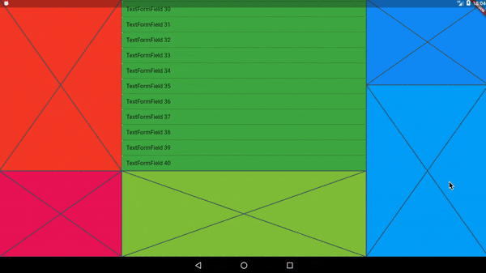

keyboard_avoider
A lightweight alternative to the Scaffold widget for avoiding the on-screen software keyboard. Automatically scrolls obscured TextField child widgets into view on focus.

In the video above, every colored area is embedded in its own KeyboardAvoider.
Example
import 'package:keyboard_avoider/keyboard_avoider.dart';
class MyWidget extends StatelessWidget {
@override
Widget build(BuildContext context) {
return KeyboardAvoider(
child: Placeholder(),
);
}
}
Why not use a Scaffold?
The Scaffold widget expects to be a full-screen widget. If the resizeToAvoidBottomPadding property is set to true (which is the default), it will adjust its bottom padding by the full height of the on-screen keyboard when it appears. In contrast, the KeyboardAvoider widget only insets its bottom padding by the actual amount obscured by the keyboard. This is especially useful when working with complex layouts on tablet devices.
Auto Scroll
To auto-scroll to a focused widget such as a TextField, set the autoScroll property to true. If child is not a ScrollView, it is automatically embedded in a SingleChildScrollView to make it scrollable.